AMSE evidence review · 7 October 2026
Completed development results; confirmation evaluation is pending. Positive reductions mean better than Original GraphCast.
AMSE: all available evidence
Vector PDF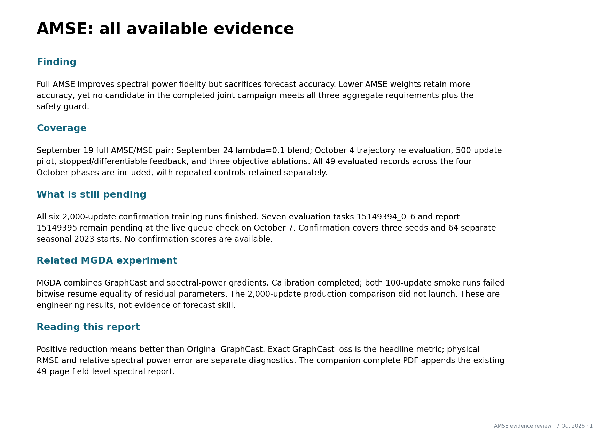
Protocols and interpretation
Vector PDF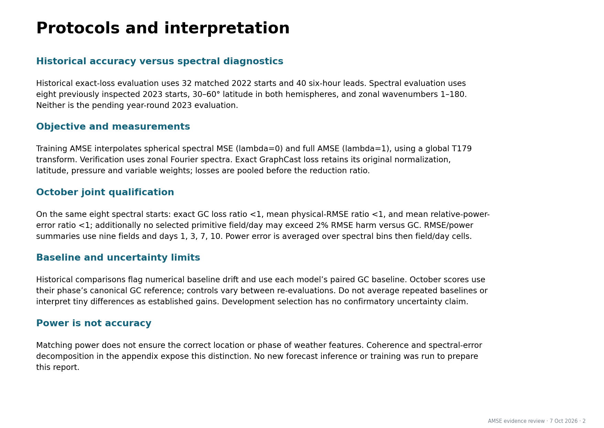
Historical AMSE: accuracy by forecast lead
Vector PDF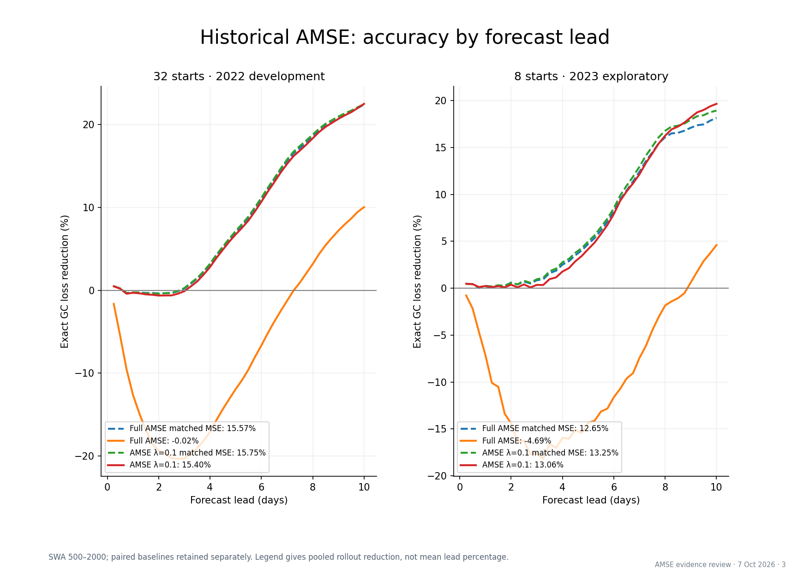
Accuracy and power: no joint winner yet
Vector PDF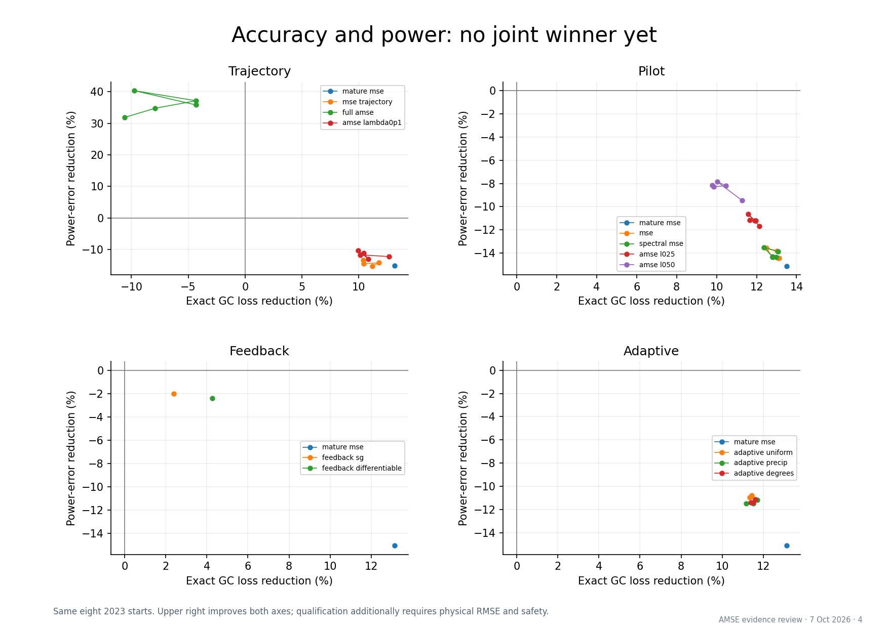
500-update pilot: increasing AMSE trades accuracy for power
Vector PDF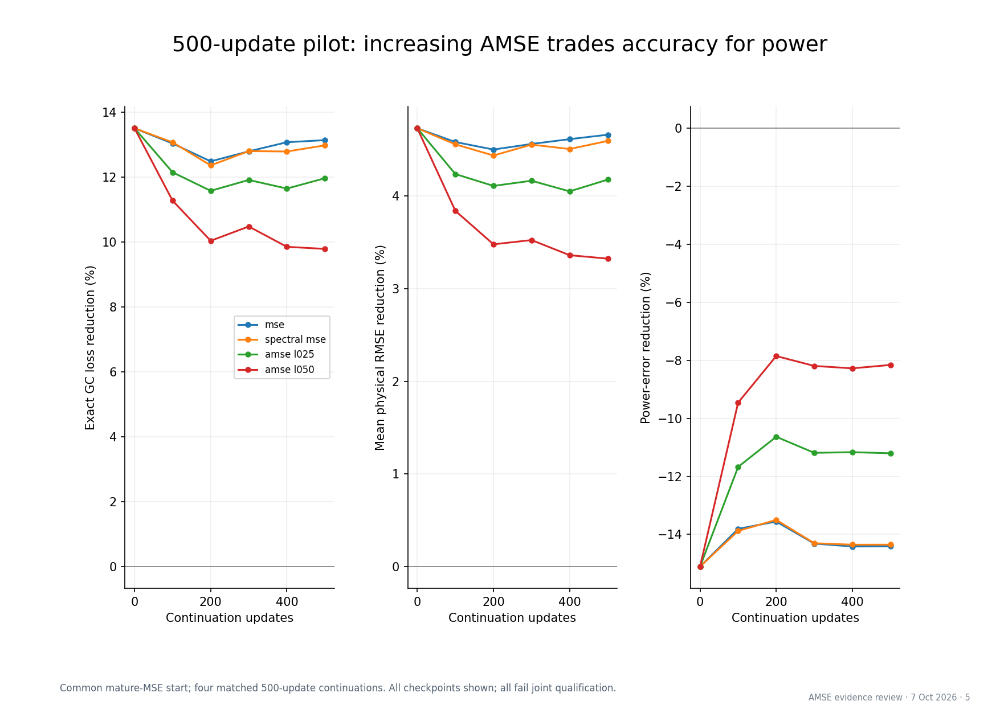
Feedback experiments: completed development results
Vector PDF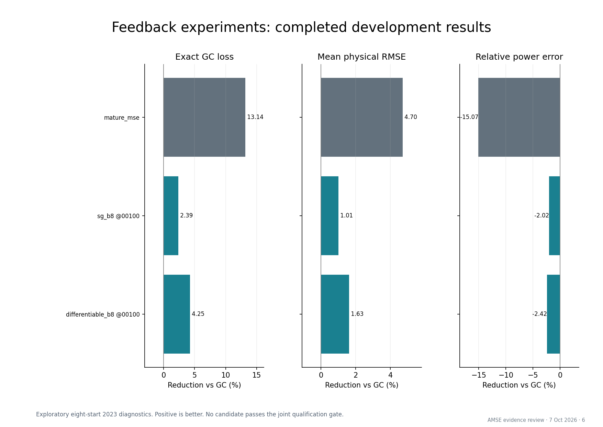
Adaptive experiments: completed development results
Vector PDF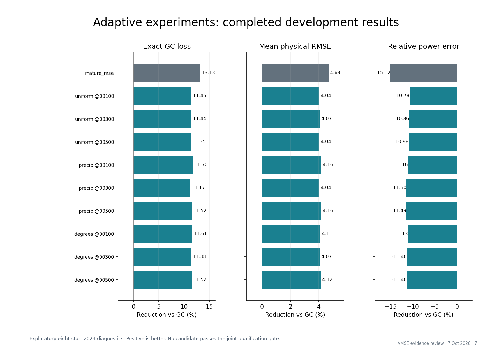
Locked recipe: where does it help or hurt?
Vector PDF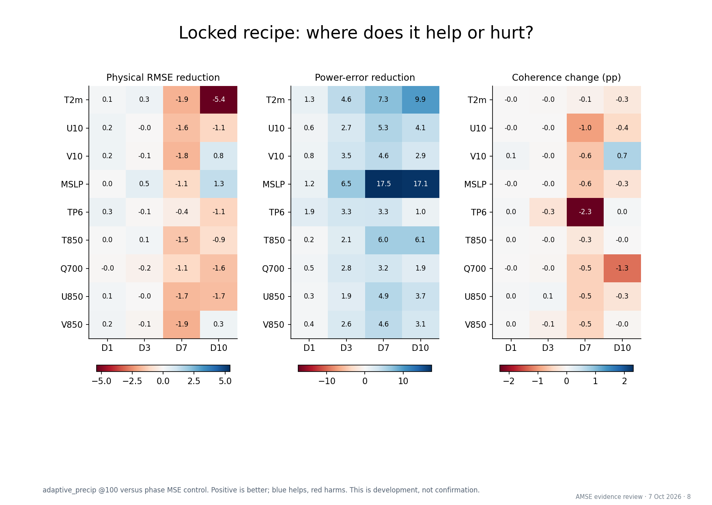
Complete checkpoint inventory: trajectory
Vector PDF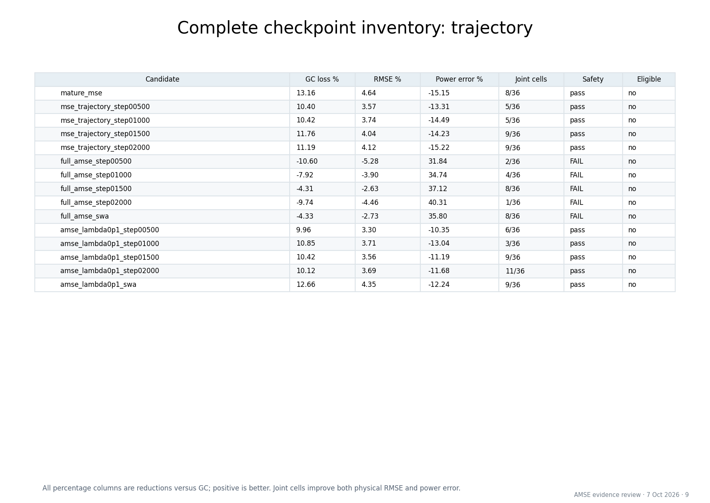
Complete checkpoint inventory: pilot
Vector PDF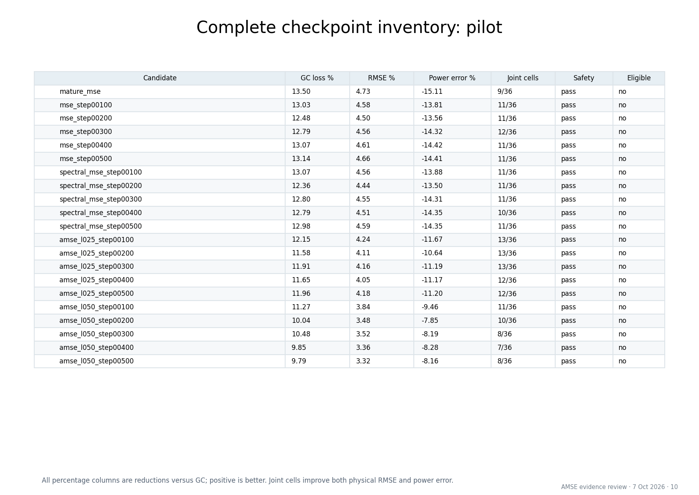
Complete checkpoint inventory: feedback
Vector PDF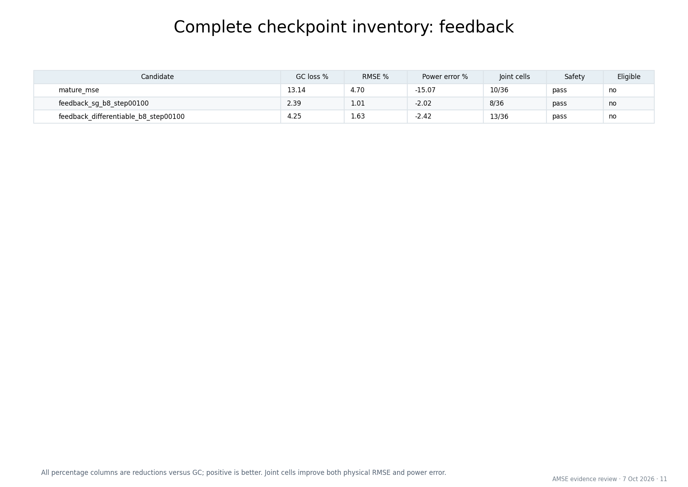
Complete checkpoint inventory: adaptive
Vector PDF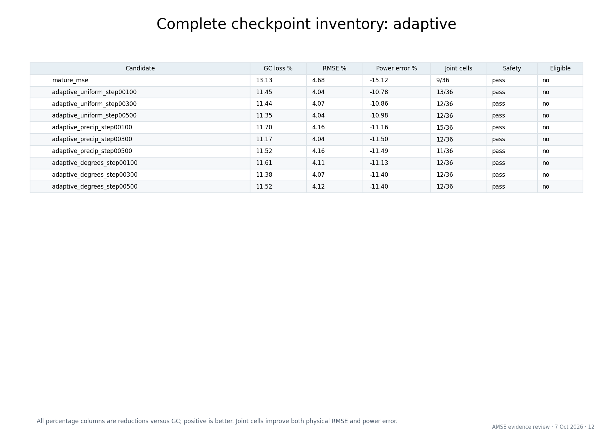
Pending work and what the evidence supports
Vector PDF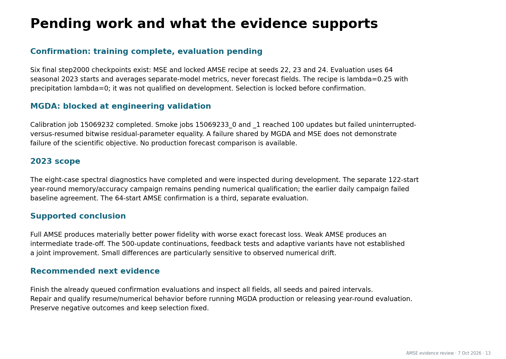